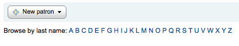
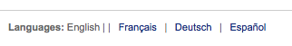

I18N/L10N
These preferences control your Internationalization and Localization settings.
Get there: More > Administration > Global System Preferences > I18N/L10N
AddressFormat
Default: US style ([Street number], [Address] - [City], [Zip/Postal Code], [Country])
Asks: Format postal addresses using ___
Values:
- German style ([Address] [Street number] - [Zip/Postal Code] [City] - [Country])
- French style ([Street number] [Address] - [ZIP/Postal Code] [City] - [Country])
- US style ([Street number], [Address] - [City], [Zip/Postal Code], [Country])
Description:
- This preference will let you control how Koha displays patron addresses given the information entered in the various fields on their record.
alphabet
Default: A B C D E F G H I J K L M N O P Q R S T U V W X Y Z
Asks: Use the alphabet ___ for lists of browsable letters. This should be a space separated list of uppercase letters.
Description:
This preference allows you define your own alphabet for browsing patrons in Koha.

CalendarFirstDayOfWeek
Default: Sunday
Asks: Use ___ as the first day of week in the calendar.
Values:
- Sunday
- Monday
- Tuesday
- Wednesday
- Thursday
- Friday
- Saturday
Description:
- Using this preference you can control what day shows as the first day of the week in the calendar pop ups throughout Koha and on the Calendar tool. If you change this preference and don’t see a change in your browser try clearing your cache since it makes changes to the Javascript on these pages.
dateformat
Default: mm/dd/yyyy
Asks: Format dates like ___
Values:
- dd.mm.yyyy
- dd/mm/yyyy
- mm/dd/yyyy
- yyyy/mm/dd
Description:
- This preference controls how the date is displayed. The options are the United States method, mm/dd/yyyy (04/24/2010), the metric method, dd/mm/yyyy (24/04/2010) or ISO, which is the International Standard of Organization, yyyy/mm/dd (2010/04/24). The International Standard of Organization would primarily be used by libraries with locations in multiple nations that may use different date formats, to have a single display type, or if the library would be in a region that does not use the United States or metric method. More information regarding the ISO date format can be found at http://www.iso.org/iso/iso_catalogue.htm.
language
Default: English
Asks: Enable the following languages on the staff interface
Values:
- English
To install additional languages please refer to http://wiki.koha-community.org/wiki/Installation_of_additional_languages_for_OPAC_and_INTRANET_staff_client
OPACLanguages
Asks: Enable the following languages on the OPAC
Default: English
Values:
- English
注解
To install additional languages you need to run misc/translator/translate install. For example, to install French you would run the following command
./misc/translator/translate install fr-FR
to make the templates. Once they exist and are in the right place, they will show up as an option in this preference.
opaclanguagesdisplay
Default: Don’t allow
Asks: ___ patrons to change the language they see on the OPAC.
Values:
Allow
Patrons can choose their language from a list at the bottom of the public catalog

Don’t allow
- The public catalog will not give an option to choose a language
Description:
- Using the OpacLangSelectorMode preference you can decide where these language options will appear in the public catalog.
TimeFormat
Default: 24 hour format
Asks: Format times in ___
Values:
- 12 hour format (eg 02:18PM)
- 24 hour format (eg 14:18)
TranslateNotices
Default: Don’t allow
Asks: ___ notices to be translated. If set, notices will be translatable from the “Notices and Slips” interface. The language used to send a notice to a patron will be the one defined for the patron.
Values:
- Don’t allow
- Allow
Description:
- If set to ‘Allow’ it is possible to choose a ‘Preferred language for notices’ when creating a new patron account in the staff interface or for the patron to do this themselves from their messaging options when logged into their account on the opac.